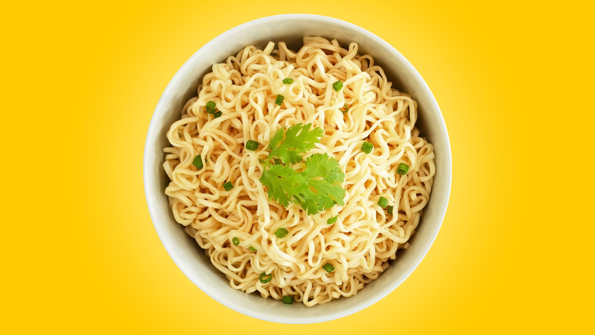

Instant Noodles

Description
Instant noodles is one of the most popularly sold convenience store items
in today's world, where people are increasingly busier to find time to
cook food or eat from a restaurant. It is cheap and takes little time to
cook, and yet satisfies our hunger and taste needs, which makes instant
noodles one of the best inventions ever made!
If you are an instant noodles fan, you would know that every brand of
instant noodles has their own recipe for cooking, and they're usually only
slightly different from each other. This simple recipe provides the
general steps with which you can cook tasty instant noodles anytime,
anywhere.
Ingredients
- 1 pack of instant noodles(any brand)
- 2 cups of water(about 400 mL)
-
Vegetables
for garnishing (eg. tomatoes, coriander leaves, chili flakes, onions,
carrots, spring greens, etc.)
-
Other garnishes
(eg. salt, pepper, lime, mushrooms, cut meat, etc.)
Steps
-
Pour 2 cups of water into a cooking bowl and heat it until it starts
boiling.
-
Simmer the heat slightly and put the noodle cake into the bowl (and the
seasoning if it's included with the instant noodles, and if you want
it).
-
Stir the water well so the seasoning gets mixed well. Flip the noodle
cake to the other side so the seasoning can get mixed with it evenly,
and repeat the process.
-
Stir well around every 20 seconds, until the water gets dried off
completely (typically takes around 2-4 minutes).
-
Your instant noodles is ready. Turn off the heat and put the noodles
into a plate.
-
Garnish with vegetables and other ingredients of your choice (Personal
recommendation: pepper, diced chicken and finely chopped tomatoes).